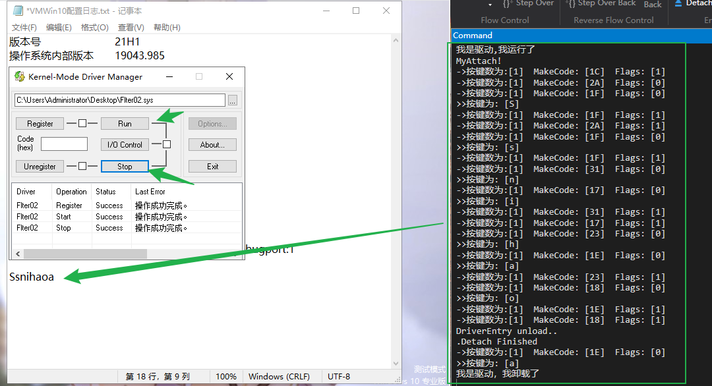

# 键盘过滤
键盘过滤可以用来做什么？
恶意程序会用很多方法结果键盘消息，我们可以使用过滤键盘的驱动进行保护。
# 技术原理
了解编写键盘驱动相关的知识。
# 预备知识
了解什么是 PDO、Windows 中从击键到内核的过程、键盘的硬件原理。
# PDO
何为 PDO？前面解释过 DO 是 Device Object 的简称， PDO 是 Phsiycal Device Object 的简称，字面上的意义是物理设备。读者暂时可以这样理解：PDO 是设备栈最下面的那个设备对象。 这个理解并不精确，但是很实用。
# Windows 中从击键到内核
了解 Windows 是是如何获得按键的，然后传递给各应用程序。
在任务管理器中，查看 csrss.exe 进程：
Csrss.exe 进程有一个线程叫做 win32!RawInputThread ，这个线程通过一个 GUID(GUID_CLASS_KEYBOARD) 来获得键盘设备栈的 PDO 符号链接名。
Win32k!RawInputThread 执行到函数 win32k!OpenDevice , 它的一个参数可以找到键盘设备栈的 PDO 的符号链接名。
Win32k!OpenDevice 有一个 OBJECT_ATTRIBUTES 结构的局部变量，它自己初始化这个局部变量，用传入参数中的键盘设备栈的 PDO 的符号链接名赋值 OBJECT_ATTRIBUTES+0x8 处的 PUNICODE_STRING ObjectName 。
然后，调用 ZwCreateFile ， ZwCreateFile 完成打开设备的工作，最后通过传入的参数返回得到的句柄。 Win32k!RawInputThread 把得到的句柄保存起来，供后面的 ReadFile ， DeviceIoControl 等使用。
win32k!RawInputThread 在获得了句柄之后，会以这个句柄为参数，调用 nt!ZwReadFile ，向键盘驱动要求读入数据。 nt!ZwReadFile 会创建一个 IRP_MJ_READ 的 IRP 发给键盘驱动，告诉键盘驱动要求读入数据。键盘驱动通常会使这个 IRP Pending ，即 IRP_MJ_READ 不被满足，它会一直被放在那里，等待来自键盘的数据。而发出这个读请求的线程 win32k!RawInputThread 也会等待，等待这个读操作的完成。
当键盘上有键被按下时，将触发键盘的中断，引起中断服务例程的执行，键盘中断的中断服务例程由键盘驱动提供。键盘驱动从端口读取扫描码，经过一系列的处理之后，把从键盘得到的数据交给 IRP，最后结束这个 IRP。这个 IRP 的结束，将导致 win32k!RawInputThread 线程对这个读操作的等待结束。 win32k!RawInputThread 线程将会对得到的数据做出处理，分发给合适的进程。一旦把输入数据处理完之后， win32k!RawInputThread 线程就会立刻再调用一个 nt!ZwReadFile ，向键盘驱动要求读入数据。于是又开始一个等待，等待键盘上的键被按下。
简单地说， win32k!RawInputThread 线程总是调用 nt!ZwReadFile 函数要求读入数据，然后等待键盘上的键被按下。当键盘上的键被按下时， win32k!RawInputThread 处理 nt!ZwReadFile 得到的数据，然后 nt!ZwReadFile 要求读入数据，再等待键盘上的键被按下。
我们一般看到的 PS/2 键盘的设备栈，如果自己没有另外安装其他键盘过滤程序，那么设备栈的情况是这样的：
最顶层的设备对象是驱动 KbdClass 生成的设备对象。
中间层的设备对象是驱动 i8042prt 生成的设备对象。
最底层的设备对象是驱动 ACPI 生成的设备对象。
原理到这里就讲完了。这段描述似乎令人眼花缭乱，但是我们没有必要非常关心其细节，只要知道我们现在要去绑定的那个设备就是驱动 KbdClass 的设备对象就可以了
# 键盘硬件原理
从键盘被敲击到计算机屏幕上出现一个字符，中间有很多复杂的变换。
一个字符显然并不代表一个键，因为大写和小写的字母是同一个键，只是根据 Shift 键来决定是大写还是小写字母。此外还有许多复杂的功能键，如 Ctrl、Alt 键，另外还有小键盘等。所以键并不用字符来代表，而是给每个键规定了一个扫描码。键盘驱动程序会读取扫描码并翻译成正确的动作，但是并非放之所有的键盘而皆准。我们应该知道每个键都对应着扫描码。
键盘和 CPU 的交互方式是中断和读取端口，这个操作是串行的。发生一次中断，就等于键盘给了 CPU 一次通知，这个通知只能通知一个事件：某个键被按下了，某个键弹起来了。我们可能会以为在按下一个字母键时，CPU 可能会去读取 Shift 键的状态，看应该是大写还是小写字母，结果却完全不是这样的。CPU 只接收通知并读取端口的扫描码，从不主动去 “查看” 任何键。
为此，一个键实际上需要两个扫描码：一个表示键按下；另一个表示键弹起。根据从网上找到的资料，如果按下的键的扫描码为 X，那么同一个键弹起的扫描码就为 X+0x80。键盘这种设备非常古老，所以貌似 Windosw XP 下端口和中断号都是定死的，即中断号为 0x93，端口为 0x60。每次中断发生时，CPU 都去读取端口 0x60 中的扫描码。0x60 中只保存一个字节，但是扫描码是可以有两个字节的，此时就会发生两次中断，CPU 会先后读到扫描码的两个字节。
无论如何按键，信息的传递都是一次一个字节串行进行的。
# 键盘过滤框架
编写一个键盘过滤驱动框架。
# 绑定键盘设备
要过滤一种设备，首先要绑定它。
现在需要找到所有代表键盘的设备。从前面的原理来看，可以认定的是，如果绑定了驱动 KbdClass 的所有设备对象，那么代表键盘的设备一定在其中。
现在我们面临的第一个问题是：如何找到一个驱动下的所有设备对象呢？
# 获取驱动对象下的所有设备对象
- 直接读取驱动对象下面的 DeviceObject 域。
一个 DRIVER_OBJECT 下有一个域叫作 DeviceObject ，这看似是一个设备对象的指针，但是由于每个 DeviceObject 中又有一个域叫作 NextDevice ，指向同一个驱动中的下一个设备，所以这里实际上是一个设备链。
- 调用函数
IoEnumerateDeviceObjectList，这个函数可以枚举出一个驱动下的所有设备。
NTSTATUS IoEnumerateDeviceObjectList( | |
[in] PDRIVER_OBJECT DriverObject, | |
[out] PDEVICE_OBJECT *DeviceObjectList, | |
[in] ULONG DeviceObjectListSize, | |
[out] PULONG ActualNumberDeviceObjects | |
); |
参数
[in] DriverObject
指向驱动程序的驱动程序对象的指针。
[out] DeviceObjectList
指向接收设备对象指针的调用方分配的数组的指针。此参数可以为 NULL。
[in] DeviceObjectListSize
DeviceObjectList 数组的大小（以字节为单位） 。可以为零。
[out] ActualNumberDeviceObjects
在驱动程序对象的设备对象列表中找到的设备对象的实际数量。请注意，如果 DeviceObjectList 处的数组太小，则复制到数组中的设备对象指针的数量将少于 ActualNumberDeviceObjects。
返回值
IoEnumerateDeviceObjectList 可以返回以下之一：
| 返回码 | 描述 |
|---|---|
| STATUS_SUCCESS | 对 IoEnumerateDeviceObjectList 的调用成功。 |
| STATUS_BUFFER_TOO_SMALL | DeviceObjectList 中 的数组太小，无法容纳整个设备对象列表。在这种情况下，IoEnumerateDeviceObjectList 将尽可能多的设备对象指针复制到数组中。 |
接下来我们获取键盘的驱动对象。
# 获取驱动对象
我们首先打开驱动对象 KbdClass ，然后绑定它下面的所有设备。
这里用到一个新的函数 —— ObReferenceObjectByName ，它用于通过一个名字来获得一个对象的指针。
但是我们需要声明这个未公开的函数，才可以调用它。
NTSTATUS | |
ObReferenceObjectByName( | |
IN PUNICODE_STRING ObjectName, | |
IN ULONG Attributes, | |
IN PACCESS_STATE AccessState OPTIONAL, | |
IN ACCESS_MASK DesiredAccess OPTIONAL, | |
IN POBJECT_TYPE ObjectType, | |
IN KPROCESSOR_MODE AccessMode, | |
IN OUT PVOID ParseContext OPTIONAL, | |
OUT PVOID* Object | |
); |
这就不得不提到另一个需要声明的全局变量：
获取导出全局变量: extern POBJECT_TYPE* IoDriverObjectType; 我在 xp 的源码中看到是这样获取的，有大佬说谭文书上的不对。
# 设备扩展
在生成一个过滤设备时，我们可以给这个设备指定一个任意长度的 “设备扩展”，这个扩展中的内容可以任意填写，作为一个自定义的数据结构。
这样就可以把真实设备的指针保存在设备对象里了，就没有必要像串口过滤的时定义两个数组了。
在这个键盘过滤中，我们可以专门定义一个结构作为设备扩展，如下：
// 设备扩展 | |
typedef struct _DEV_EXT | |
{ | |
// 结构体大小 | |
ULONG ulSize; | |
// 过滤设备对象 | |
PDEVICE_OBJECT pFilterDeviceObject; | |
// 绑定的目标设备对象 | |
PDEVICE_OBJECT pTargetDeviceObjecct; | |
// 返回对象 | |
PDEVICE_OBJECT pLowerDeviceObjecct; | |
// 自旋锁 | |
KSPIN_LOCK IoRequestsSpinLock; | |
// 事件 | |
KEVENT IoInProgressEvent; | |
}DEV_EXT, * PDEV_EXT; |
# 绑定设备的代码
// 获取导出全局变量 | |
extern POBJECT_TYPE* IoDriverObjectType; | |
// 声明未公开函数 | |
NTSTATUS | |
ObReferenceObjectByName( | |
IN PUNICODE_STRING ObjectName, | |
IN ULONG Attributes, | |
IN PACCESS_STATE AccessState OPTIONAL, | |
IN ACCESS_MASK DesiredAccess OPTIONAL, | |
IN POBJECT_TYPE ObjectType, | |
IN KPROCESSOR_MODE AccessMode, | |
IN OUT PVOID ParseContext OPTIONAL, | |
OUT PVOID* Object | |
); | |
// 设备扩展 | |
typedef struct _DEV_EXT | |
{ | |
// 结构体大小 | |
ULONG ulSize; | |
// 过滤设备对象 | |
PDEVICE_OBJECT pFilterDeviceObject; | |
// 绑定的目标设备对象 | |
PDEVICE_OBJECT pTargetDeviceObject; | |
// 返回对象 | |
PDEVICE_OBJECT pLowerDeviceObject; | |
// 自旋锁 | |
KSPIN_LOCK IoRequestsSpinLock; | |
// 事件 | |
KEVENT IoInProgressEvent; | |
}DEV_EXT, * PDEV_EXT; | |
// 绑定设备 | |
// 获取 KbdClassd 的驱动对象，然后绑定其所有设备对象 | |
NTSTATUS kbdAttachDevices( | |
IN PDRIVER_OBJECT pDriver, | |
IN PUNICODE_STRING pRegPath | |
) | |
{ | |
NTSTATUS status = 0; | |
UNICODE_STRING uniNtNameString; | |
PDEV_EXT pdevext; | |
PDEVICE_OBJECT pFilterDeviceObject = NULL; | |
PDEVICE_OBJECT pTargetDeviceObject = NULL; | |
PDEVICE_OBJECT pLowerDeviceObject = NULL; | |
PDRIVER_OBJECT KbdDriverObject = NULL; | |
DbgPrint("MyAttach!\t\n"); | |
// 获取 KbdClass 驱动对象 | |
RtlInitUnicodeString(&uniNtNameString, KBD_DRIVER_NAME); | |
status = ObReferenceObjectByName( | |
&uniNtNameString, | |
OBJ_CASE_INSENSITIVE, NULL, 0, | |
*IoDriverObjectType, // 在 xp 源码中看到就是这样的 | |
KernelMode, | |
NULL, &KbdDriverObject | |
); | |
if (!NT_SUCCESS(status)) | |
{ | |
DbgPrint("MyAttach:Couldn't get the [KbdClass DriverObject]\t\n"); | |
return status; | |
} | |
// 解引用 | |
ObDereferenceObject(KbdDriverObject); | |
// 获取 KbdClass 驱动对象下的所有设备对象并绑定 | |
// 设备链中第一个设备 | |
pTargetDeviceObject = KbdDriverObject->DeviceObject; | |
// 遍历设备链 | |
while (pTargetDeviceObject) | |
{ | |
// 首先生成一个过滤设备 | |
status = IoCreateDevice( | |
IN pDriver, | |
IN sizeof(DEV_EXT), | |
IN NULL, | |
IN pTargetDeviceObject->DeviceType, | |
IN pTargetDeviceObject->Characteristics, | |
IN FALSE, | |
OUT & pFilterDeviceObject | |
); | |
if (!NT_SUCCESS(status)) | |
{ | |
DbgPrint("MyAttach:Couldn't Create Filter Device Object\t\n"); | |
pFilterDeviceObject = NULL; | |
pTargetDeviceObject = NULL; | |
return status; | |
} | |
// 绑定 | |
//pLowerDeviceObject 是目标设备 设备栈栈顶的那个设备！ | |
status = IoAttachDeviceToDeviceStackSafe( | |
pFilterDeviceObject, | |
pTargetDeviceObject, | |
&pLowerDeviceObject | |
); | |
if (!NT_SUCCESS(status)) | |
{ | |
DbgPrint("MyAtach:Couldn't attach KbdClass Device Object\t\n"); | |
IoDeleteDevice(pFilterDeviceObject); | |
pFilterDeviceObject = NULL; | |
return status; | |
} | |
// 设置 设备扩展 | |
pdevext = (PDEV_EXT)(pFilterDeviceObject->DeviceExtension); | |
// 初始化设备扩展 | |
DevExtInit(pdevext, pFilterDeviceObject, pTargetDeviceObject, pLowerDeviceObject); | |
// 设置相关属性 | |
pFilterDeviceObject->DeviceType = pLowerDeviceObject->DeviceType; | |
pFilterDeviceObject->Characteristics = pLowerDeviceObject->Characteristics; | |
pFilterDeviceObject->StackSize = pLowerDeviceObject->StackSize+1; | |
pFilterDeviceObject->Flags |= pLowerDeviceObject->Flags & (DO_BUFFERED_IO | DO_DIRECT_IO | DO_POWER_PAGABLE); | |
// 获取下一个设备对象 | |
pTargetDeviceObject = pTargetDeviceObject->NextDevice; | |
} | |
return status; | |
} |
# 键盘过滤模块的 DriverEntry
// 入口函数 | |
NTSTATUS DriverEntry(PDRIVER_OBJECT pDriver, PUNICODE_STRING pRegPath) { | |
NTSTATUS status; | |
ULONG i; | |
DbgPrint("我是驱动,我运行了\t\n"); | |
// 设置分发函数 | |
for (i = 0; i < IRP_MJ_MAXIMUM_FUNCTION; i++) | |
{ | |
pDriver->MajorFunction[i] = myDispatch; | |
} | |
// 单独填写一个 IRP_MJ_POWER 函数， 因为重要的过滤就是读取来的按键信息，其他的都不重要 | |
pDriver->MajorFunction[IRP_MJ_READ] = myReadDispatch; | |
// 单独写一个 IRP_MJ_POWER 函数 | |
pDriver->MajorFunction[IRP_MJ_POWER] = myPowerDispatch; | |
// PNP (即插即用) 我们要知道什么时候一个绑定过的设备被卸载（比如从机器上拔掉） | |
pDriver->MajorFunction[IRP_MJ_PNP] = myPNPDispatch; | |
// 卸载函数 | |
pDriver->DriverUnload = myDriverUnload; | |
// 绑定所有的键盘设备 | |
status = kbdAttachDevices(pDriver, pRegPath); | |
return status; | |
} |
# 键盘过滤模块的动态卸载
键盘过滤模块的动态卸载和前面的串口过滤稍有不同，这是因为键盘总是处于 “有一个读请求没有完成” 的状态。
“当键盘上有键被按下时，将触发键盘的中断，引起中断服务例程的执行，键盘中断的中断服务例程由键盘驱动提供。键盘驱动从端口读取扫描码，经过一系列的处理之后，把从键盘得到的数据交给 IRP，然后结束这个 IRP。这个 IRP 的结束，将导致 win32k!RawInputThread 线程对这个读操作的等待结束。 win32k!RawInputThread 线程将会对得到的数据做出处理，分发给合适的进程。一旦把输入数据处理完之后， win32k!RawInputThread 线程会立刻再调用一个 nt!ZwReadFile ，向键盘驱动要求读入数据。于是又开始一个等待，等待键盘上的键被按下。”
换句话说，就算类似于串口驱动一样等待 5 秒，这个请求也未必会完成（如果没有按键的话）。这样如果卸载了过滤驱动，那么等下次一按键，这个请求就被处理，很可能马上就蓝屏崩溃了。
下面是对实际中动态卸载的处理。
// 解除绑定并删除设备 | |
VOID c2pDetach(IN PDEVICE_OBJECT pDeviceObject) | |
{ | |
PDEV_EXT devExt; | |
BOOLEAN NoRequestsOutstanding = FALSE; | |
devExt = (PDEV_EXT)pDeviceObject->DeviceExtension; | |
__try | |
{ | |
__try | |
{ | |
IoDetachDevice(devExt->pTargetDeviceObject); | |
devExt->pTargetDeviceObject = NULL; | |
IoDeleteDevice(pDeviceObject); | |
devExt->pFilterDeviceObject = NULL; | |
DbgPrint(("Detach Finished\n")); | |
} | |
__except (EXCEPTION_EXECUTE_HANDLER) {} | |
} | |
__finally {} | |
return; | |
} | |
// 卸载函数 | |
VOID myDriverUnload(PDRIVER_OBJECT pDriver) { | |
PDEVICE_OBJECT pDeviceObject; | |
PDEVICE_OBJECT OldDeviceObject; | |
PDEV_EXT pdevext; | |
LARGE_INTEGER lDelay; | |
PRKTHREAD CurrentThread; | |
lDelay = RtlConvertLongToLargeInteger(100 * DELAY_ONE_MILLISECOND); | |
CurrentThread = KeGetCurrentThread(); | |
// 把当前线程设置为低实时模式，一遍让它的运行尽量少影响其他程序 | |
KeSetPriorityThread(CurrentThread, LOW_REALTIME_PRIORITY); | |
// UNREFERENCED_PARAMETER(pDriver); | |
DbgPrint("DriverEntry unload..\t\n."); | |
// 遍历所有设备并一律解除绑定 | |
pDeviceObject = pDriver->DeviceObject; | |
while (pDeviceObject) | |
{ | |
// 解除绑定并删除设备 | |
c2pDetach(pDeviceObject); | |
pDeviceObject->NextDevice; | |
} | |
ASSERT(NULL == DriverObject->DeviceObject); | |
while (gC2pKeyCount) | |
{ | |
// 睡眠 1 毫秒 | |
KeDelayExecutionThread(KernelMode, FALSE, &lDelay); | |
} | |
DbgPrint("我是驱动，我卸载了\t\n"); | |
return; | |
} |
这里的防止未决请求没有完成的方法就是使用 gC2pKeyCount 。
gC2pKeyCount 在这里是一个全局变量，每次有一个读请求到来时， gC2pKeyCount 被加 1；每次完成时，则减 1。于是只有所有请求都完成后，才结束等待；否则就无休止地等待下去。
实际上，只有一个键被按下时，这个卸载过程才结束。
# 键盘过滤的请求处理
在 DriverEntry 中我们设置了相关的分发函数，在这里我们来逐个实现这些函数。
# 通常的处理
最通常的处理就是直接发送到真实设备，跳过虚拟设备的处理。这和前面串口过滤用过的方法一样。代码如下：
// 普通分发函数 | |
NTSTATUS myDispatch( | |
IN PDEVICE_OBJECT pDevice, | |
IN PIRP irp | |
) | |
{ | |
// 其他的分发函数，直接 skip，然后用 IoCallDriver 把 IRP 发送到真实设备的设备对象上 | |
DbgPrint("Other Disapatch!\t\n"); | |
IoSkipCurrentIrpStackLocation(irp); | |
return IoCallDriver(((PDEV_EXT)pDevice->DeviceExtension)->pLowerDeviceObject, irp); | |
}; |
# PNP 的处理
唯一需要处理的是，当有一个设备被拔出时，解除绑定并删除过滤设备。代码的实现大致如下：
// PNP 处理 | |
NTSTATUS myPNPDispatch( | |
IN PDEVICE_OBJECT pDevice, | |
IN PIRP irp | |
) | |
{ | |
PDEV_EXT pdevext; | |
PIO_STACK_LOCATION pIrpStack; | |
NTSTATUS status = STATUS_SUCCESS; | |
KIRQL oldIrql; | |
KEVENT event; | |
// 获取这真实设备 | |
pdevext = (PDEV_EXT)(pDevice->DeviceExtension); | |
pIrpStack = IoGetCurrentIrpStackLocation(irp); | |
// 获取次功能号 | |
switch (pIrpStack->MinorFunction) | |
{ | |
case IRP_MN_REMOVE_DEVICE: | |
DbgPrint("IRP_MN_REMOVE_DEVICE\t\n"); | |
// 首先把请求发下去 | |
IoSkipCurrentIrpStackLocation(irp); | |
IoCallDriver(pdevext->pLowerDeviceObject, irp); | |
// 然后接触绑定 | |
IoDetachDevice(pdevext->pLowerDeviceObject); | |
// 删除我们生成的虚拟设备 | |
IoDeleteDevice(pDevice); | |
status = STATUS_SUCCESS; | |
break; | |
default: | |
// 对于其他类型的 IRP，全部直接下发即可 | |
IoSkipCurrentIrpStackLocation(irp); | |
status = IoCallDriver(pdevext->pLowerDeviceObject, irp); | |
break; | |
} | |
return status; | |
} |
当 PNP 请求过来时，是没有必要担心还有未完成的 IRP 的。
这是因为 Windows 系统要求卸载设备，此时 Windows 自己应该已经处理掉了所有未决的 IRP。
这是和我们自己要求卸载过滤驱动不同的地方。
# 读的处理
前面见过的所有请求，都是处理完毕之后，直接发送到下层驱动之后就不管了。但是在处理键盘读请求时，这样做是不行的。
当一个读请求到来时，只是说 Windows 要从键盘驱动读取一个键扫描码值，但是在完成之前显然并不清楚这个值到底是多少。
我们要过滤的目的，就是要获得按下了什么键，所以不得不换一种处理方法，就是把这个请求下发完成之后，再去看这个值是多少。
要完成请求，可以采用如下的步骤。
（1）调用 IoCopyCurrentIrpStackLocationToNext 把当前 IRP 栈空间拷贝到下一个栈空间（这和前面的调用 IoSkipCurrentIrpStackLocation 跳过当前栈空间形成对比）。
（2）给这个 IRP 设置一个完成函数。完成函数的含义是，如果这个 IRP 完成了，系统就会回调这个函数。
（3）调用 IoCallDriver 把请求发送到下一个设备
另外一个需要解决的问题就是我们前面所需要的一个键计数器。
即一个请求到来时，我们把全局变量 gC2pKeyCount 加 1，等完成之后再减 1。这个处理比较简单。
完整的读处理请求如下：
// 读请求 | |
NTSTATUS myReadDispatch( | |
IN PDEVICE_OBJECT pDevice, | |
IN PIRP irp | |
) | |
{ | |
NTSTATUS status = STATUS_SUCCESS; | |
PDEV_EXT pdevext; | |
PIO_STACK_LOCATION pIrpStack; | |
KEVENT waitevent; | |
KeInitializeEvent(&waitevent, NotificationEvent, FALSE); | |
// 判断是否到达了 irp 栈的最低端 | |
if (irp->CurrentLocation == 1) | |
{ | |
ULONG ReturnedInformation = 0; | |
DbgPrint("Dispatach encountered bogus current location\t\n"); | |
status = STATUS_INVALID_DEVICE_REQUEST; | |
irp->IoStatus.Status = status; | |
irp->IoStatus.Information = ReturnedInformation; | |
IoCompleteRequest(irp, IO_NO_INCREMENT); | |
return status; | |
} | |
// 全局变量键计数器加 1 | |
gC2pKeyCount++; | |
// 得到设备扩展，目的是为了获得下一个设备的指针 | |
pdevext = (PDEV_EXT)pDevice->DeviceExtension; | |
// 设置回调函数并把 IRP 传递下去。之后读的处理也就结束了。剩下的任务是等待读请求完成 | |
pIrpStack = IoGetCurrentIrpStackLocation(irp); | |
// 复制当前 IRP 栈空间 | |
IoCopyCurrentIrpStackLocationToNext(irp); | |
// 设置完成回调函数 | |
IoSetCompletionRoutine( | |
irp, | |
myReadComplete, | |
pDevice, TRUE, TRUE, TRUE); | |
return IoCallDriver(pdevext->pLowerDeviceObject, irp); | |
} |
# 读完成的处理
读请求完成之后，应该获得输出缓冲区，按键信息就在输出缓冲区中，区局变量 gC2pKeyCount 应该减 1。
如何在缓冲区中获取按键信息呢？ 还需要了解一种数据结构
# KEYBOARD_INPUT_DATA 结构
typedef struct _KEYBOARD_INPUT_DATA { | |
USHORT UnitId; | |
USHORT MakeCode; | |
USHORT Flags; | |
USHORT Reserved; | |
ULONG ExtraInformation; | |
} KEYBOARD_INPUT_DATA, *PKEYBOARD_INPUT_DATA; |
UnitId
指定键盘设备的单元号。键盘设备名称的格式为 \Device\KeyboardPort N ，其中后缀 N 是设备的单元号。例如，名称为 \Device\KeyboardPort0 的设备的单元号为 0 ，名称为 \Device\KeyboardPort1 的设备的单元号为 1 。
MakeCode
指定与按键关联的扫描代码。
Flags
指定以下一个或多个标志的按位或，这些标志指示键是被按下还是释放，以及其他杂项信息。
| 价值 | 意义 |
|---|---|
| KEY_MAKE | 键被按下。 |
| KEY_BREAK | 键被释放了。 |
| KEY_E0 | 用于指示特殊键盘功能的扩展扫描码。 |
| KEY_E1 | 用于指示特殊键盘功能的扩展扫描码。 |
Reserved
保留供操作系统使用。
ExtraInformation
指定与键盘事件关联的设备特定信息。
至于有多少个这样的结构，则取决于输入缓冲区到底有多长。实际上，这种结构的个数应该为：
keys = (irp->IoStatus.Information) / sizeof(KEYBOARD_INPUT_DATA);
# 读完成函数完整代码
此外，再没有其他的事情需要完成了。所以相关代码比较简单，大致如下：
NTSTATUS myReadComplete( | |
IN PDEVICE_OBJECT pDevice, | |
IN PIRP irp, | |
IN PVOID Context | |
) | |
{ | |
NTSTATUS status; | |
PIO_STACK_LOCATION pIrpStack; | |
ULONG keys; | |
ULONG buf_len = 0; | |
PKEYBOARD_INPUT_DATA pKeyBoardData; | |
// 获取 IRP 堆栈 | |
pIrpStack = IoGetCurrentIrpStackLocation(irp); | |
// 判断这个 IRP 是否成功 | |
if (NT_SUCCESS(irp->IoStatus.Status)) | |
{ | |
// 获取读请求完成后的输出缓冲区 | |
pKeyBoardData = irp->AssociatedIrp.SystemBuffer; | |
//irp->IoStatus.Information 其实就是完成信息的大小。得到了按下的键的数量 | |
keys = (irp->IoStatus.Information) / sizeof(KEYBOARD_INPUT_DATA); | |
DbgPrint("keys:%d\t\n", keys); | |
for (size_t i = 0; i < keys; i++) | |
{ | |
DbgPrint("numkey:%u\t\n", keys); | |
// 按键码不等于字符 | |
DbgPrint("sancode:%x\t\n", pKeyBoardData->MakeCode); | |
DbgPrint("%s\t\n", pKeyBoardData->Flags ? "Up" : "Down"); | |
if (pKeyBoardData->MakeCode == 0x1f) | |
{ | |
// 过滤按键，修改为 0x20 | |
// 这里也可以做其他的许多事情：键盘记录等等 | |
pKeyBoardData->MakeCode = 0x20; | |
} | |
} | |
} | |
gC2pKeyCount--; | |
if (irp->PendingReturned) | |
{ | |
IoMarkIrpPending(irp); | |
} | |
return irp->IoStatus.Status; | |
} |
这里的读完成函数我们只是简单的打印了对应每次按键信息的结构体 KEYBOARD_INPUT_DATA 中的成员，并且把所有 MakeCode 值为 0x1f 修改为了 0x20 , 这样当按下 s 键时会替换成为 d 键。
# 从 MakeCode 到实际字符
接下来我们将尽力地把按键显示成可以显示的字符。虽然这并不总是可行的（比如按下 Shift 键然后弹起，显然密码框里不会因此被输入一个字符），这涉及扫描码和实际字符是如何对应的。
所谓的实际字符就是 ASCII 码。大家都知道大写 / 小写字符的 ASCII 码并不相同，但是键是同一个（就是说扫描码是相同的），具体是哪个取决于几个键的状态（包括 Shift 键、 Caps Lock 键）。因此，这个模块在过滤按键的同时，也必须把这几个控制键的状态保存下来。
请注意 Shift 键和 Caps Lock 键的不同： Shift 键是按下生效，释放则无效了；而 Caps Lock 键是按一次生效，再按一次无效了。因此过滤的方法也不
一样。
具体实现见代码。
# 运行结果
代码放在 github 了， https://github.com/Or0kit/Flter02
